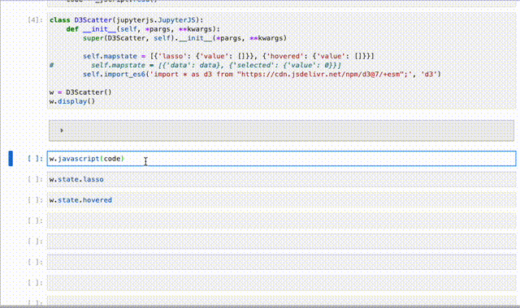
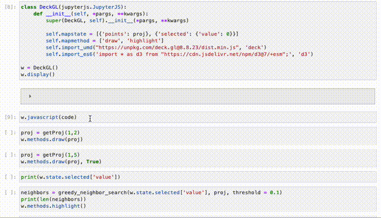
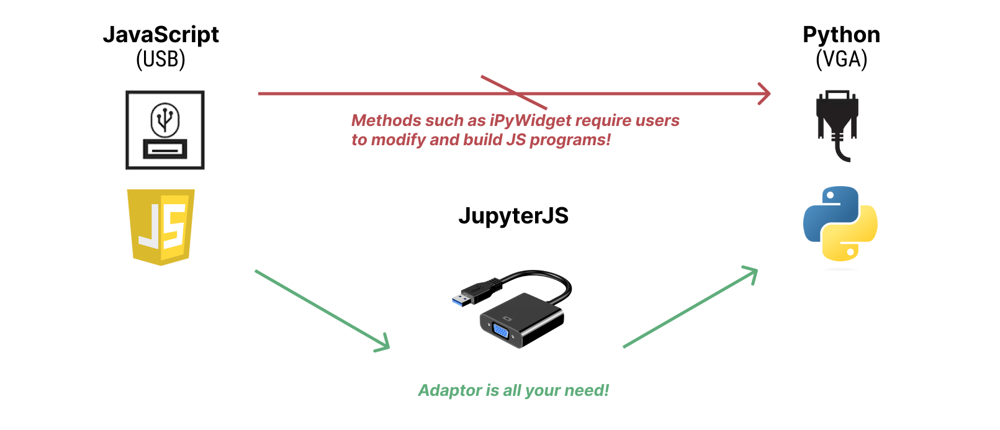

Welcome to JupyterJS#
JupyterJS is a Jupyter notebook/lab widget for running JavaScript codes and creating reactive visusalizations.
The teaser example shows an example. One can easily reuse JavaScript codes (e.g., this d3 program) and bind variables between Python and JavaScript, reactively. Upon hovering or lassoing points in JavaScript visualizations, one can access corresponding values in Python kernel.

JupyterJS also supports importing ES6/UMD libraries and binding functions/callbacks. The following example visualizes 10k points using DeckGL. One can call Javascript functions from Python kernel, e.g., changing the data in the plot. Another usage is to “hack” 3D lasso by chaining Python/JavaScipt callbacks:
Clicking a point in JavaScipt visualizations
Run a Python function that greedily finds its neighbors within a threshold
Highlight its neighbors!

How JupyterJS works?#

JupyterJS implements the adapter software pattern. Instead of asking users to modify JavaScript codes, JupyterJS provides an interface to bind variables/functions and execute JavaScript codes. Binding can be done as simple as two lines:
JupyterJS.mapstate = [{'pyVar': 5}, 'jsVar']
JupyterJS.mapmethod = [{'pyFunc': foo}, 'jsFunc']
Check out the Usage section for further information.